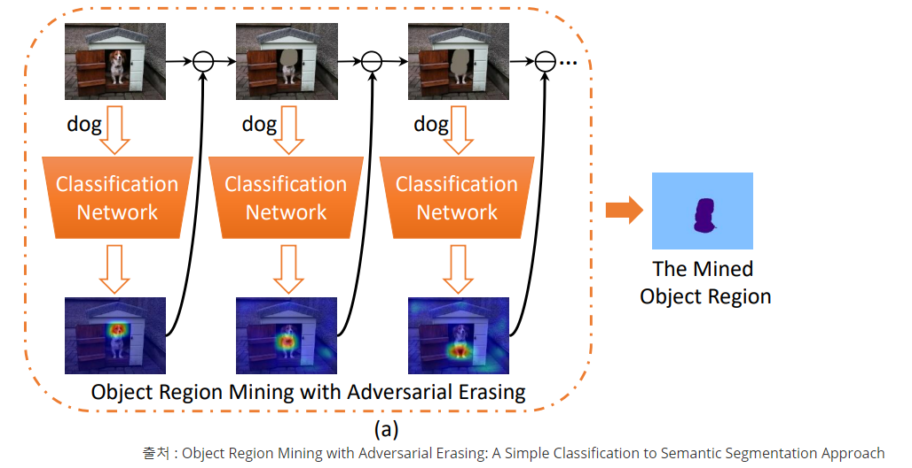
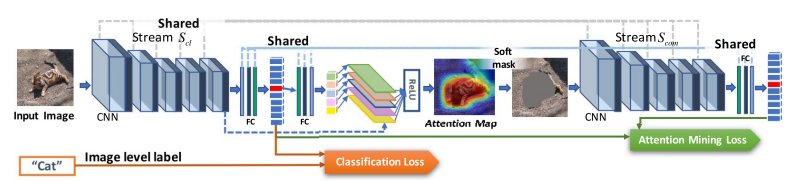
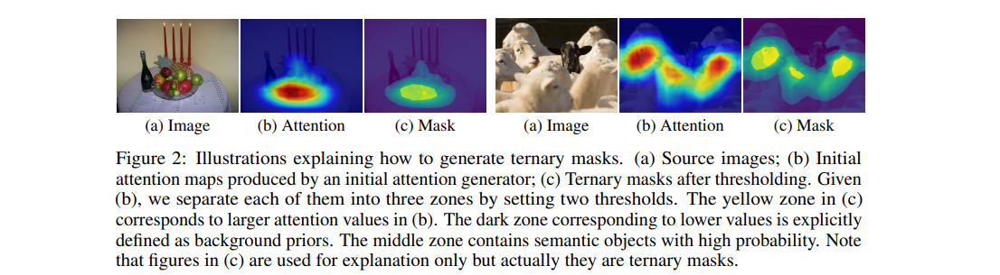
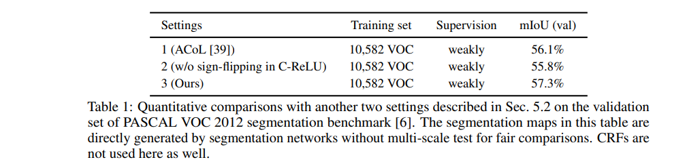
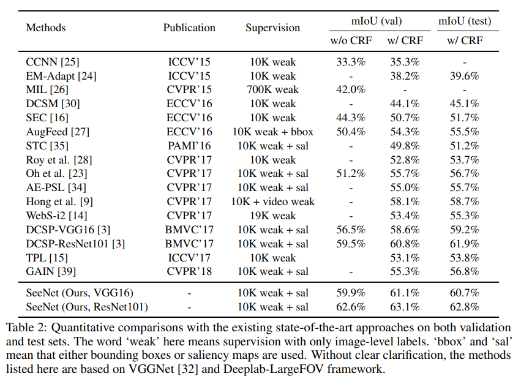
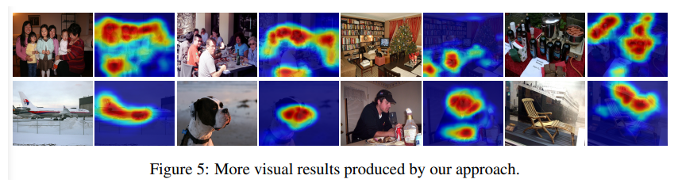

[Draft] SeeNet - NeurIPS 2018¶
Title: Self-Erasing Network for Integral Object Attention
Review By: 김현우
Edited by:
Reference¶
Problem Statement¶
Semantic segmentation model을 학습하기 위해서는 dense class label이 필요하지만, data를 수집하고 labeling 하는 것은 비용이 많이 든다.
Adversarial Erasing 기법을 계속 적용할 경우 배경에도 Attention 영역이 넓혀지는 문제가 존재한다.
Contribution¶
Self-Erasing이라는 전략을 통해서 위에서 발생하는 문제점을 해결
배경의 영역이 보통 유사한 모습을 보이는 것에 착안해서, 배경의 사전확률 (prior)을 통해서 배경영역으로 Attention이 퍼지는 것을 방지
Adversarial Erasing을 몇번 적용할지에 대해서 모델 스스로가 Adaptively 하게 학습함
Pascal VOC에서 SOTA 성능을 달성
BackGround¶
(1) Earlier Work

GAP와 Weight를 곱해서 CAM 결과를 생성
(2) Adversarial Erasing Strategy

입력 이미지에서 CAM을 지속적으로 제거해서 Object 영역을 추출
단, 언제까지 영역을 지워야할지에 대한 한계가 존재

Object Region Mining과 비슷한 전략이지만, Classifier Branch를 두개 두어서 A에서 얻은 특징맵을 B에 들어가기전에 제거해서 사용
하지만, 배경영역까지 Attention 결과가 넓혀지는 문제가 존재

출처 : Tell Me Where to Look: Guided Attention Inference Network
(3) Weakly Supervised Semantic Segmentation

4개의 레이블로 Weakly Supervised Semantic Segmentation을 수행하지만, 대체적으로 image-level labels가 가장 많이 사용됨
Proposed Method¶

1. Observations¶
AE Step이 진행됨에 따라서 Object 영역 이외까지 Attention이 확장되는 문제발생
일반적으로, 사람도 가장 중요한 부분을 먼저 보고 그 외로 관심있는 부분을 보는 것은 (b-e) 동일하지만 차이는 사람은 배경을 제대로 구분해서 그 부분을 보지 않는다는 점
하지만, Attention network는 이미지 레이블만으로 배경을 구분하는 능력이 없음
그렇기에, 배경에 대한 Prior을 Attention network에 전달해주는 것이 필요하고 이러한 방법을 제안
2. Self-Erasing¶

\(S_A\)에서 초기 Attention을 생성. 단, 이때 생성된 Attention을 Fig2의 c에 나온 그럼처럼 2개의 Threshold를 통해서 3가지의 영역으로 나눔
attention zone : 노란색 영역으로 객체를 인식할 때 중요한 부분 (attention 값이 큰 부분)
background zone : 배경에 대한 prior (attention 값이 작은 부분)
potential zone : 높은 확률로 semantic objects가 포함된 영역 (attention 값이 중간인 영역?)

단, Observation에서 언급한 것처럼 attention 영역을 background 영역으로 넓혀지지 않게 해야하는데, 이를 위해서는 다음의 두가지 문제를 해결해야함
이미지 레이블만을 가지고 배경에 대한 부분을 어떻게 정의하고 얻을지?
Fig3에서 소개한 것처럼 Attention으로 얻은 초기 영역을 2개의 threshold를 통해서 나눠서 얻음. \(\delta_h\)보다 큰 영역은 \(M_A\)로 \(\delta_l\)보다 작은 영역은 배경으로 구분. 이를 통해서 Ternary Mask T를 \(**\delta_h\)보다 크면 \(0\), \(\delta_l\) 보다 작으면 \(-1\), 그렇지 않으면 \(1\)**으로 해서 생성할 수 있음
self-erasing을 어떻게 attention network 내부로 넣을지?
3장에서 Conditionally Reversed Linear Units (C-ReLUs)를 통해서 해결
3. Self-Erasing Network¶
\(S_A\)부터 \(S_C\)로 구성된 3가지의 브랜치로 구성된 형태
\(S_A\)는 초기의 Attention을 추출하는 역할을, \(S_B\), \(S_C\)는 Self-Erasing을 수행
Conditionally Reversed Linear Units (C-ReLUs)

목적 : 배경에 속한 Attention 영역에 집중된 특징? 관심을 Potential Zone으로 바꿔주는 역할을 수행
\(T_A(x)\) 가 Binary Mask로 \(\{-1,1\}\)을 가져서 non-negative만 가지던 값에서 negative도 가지도록 변경
배경영역의 Feature map은 \(-x\)를 가지고 그렇지 않은 영역은 \(x\)를 가짐
C-ReLU 이후 양수인 영역에 대해서 좀 더 집중하게 됨
Potential한 영역과 Background 영역이 대비되어서 모델이 이를 더 잘 인식하게 됨
Self-erasing strategy I
목적 : Attention 영역을 입력 이미지에서 제거하고 배경 영역은 음수로 두어서 potential 영역을 강조 (\(S_B\))
\(T_A(x)\)가 1인 영역인 가장 Discriminative한 영역은 입력 Feature map에서 제거 (Erasing)
\(T_A(x)\)와 Feature map에 \(\max(x,0)\) 취한 값을 곱하게되면, 배경에 있는 영역은 -1로 그렇지 않은 영역은 \(x\) 그대로 나오면서 배경에 있는 부분을 덜 강조하게 되고 potential 영역에 있는 부분을 강조하게됨
배경의 값은 이때 \(-x\)이고, Discriminative한 영역은 이미 0으로 제거되었고 양수의 값은 potential한 영역만 남아있음
Self-erasing strategy II
목적 : 배경영역으로 attention이 뻗어나가는 것을 방지 (\(S_C\))
위와는 반대로, 배경을 1로 그렇지 않은 영역을 0으로 취해서 Binary Mask를 구성
Feature map과 이를 곱하면 배경 영역만 양수의 값을 가지고, 그 외의 영역은 0을 가져서 배경 부분에 모델이 집중하게됨
배경 부분에 잘못된 값이 생기면, 모델이 이 값을 통해서 조정할 수 있도록 해주는 역할
Others
Loss
모든 브랜치는 multi-label classification을 수행
\(S_A\), \(S_B\)에 대한 Label은 Class에 대한 binary label vector 이며 \(**S_C\)에 대한 Label 배경영역에 Object가 없으면 Zero vector을 가지는 형태**
Test phase
Segmentation 학습을 위한 Attention Mask 생성하는 부분인듯
\(M_A\) and \(M_B\) to the range \([0,1]\) and denote the results as \(\hat{M_A}\) and \(\hat{M_B}\)
fused attention map \(M_F\) is calculated by \(M_{F,i}=\max\left(\hat{M_{M,i}}, \hat{M_{B,i}}\right)\)
\(M_{\text{final, i}}\)can be computed by \(M_{\text{final, i}}=\max\left(M_{F,i}, M_{H,i}\right)\). (horizontal flip)
def forward(net, im, label):
im, height, width = resize(im, test_size)
net.blobs['data'].reshape(1, *im.shape)
net.blobs['data'].data[...] = im
net.blobs['label'].reshape(1, 1, 1, 20)
net.blobs['label'].data[0,0,0,label] = 1
net.forward()
att1 = net.blobs['score_b1'].data[0][label]
att2 = net.blobs['score_b2'].data[0][label]
att1 = cv2.resize(att1, (width, height), interpolation=cv2.INTER_CUBIC)
att2 = cv2.resize(att2, (width, height), interpolation=cv2.INTER_CUBIC)
att1[att1 < 0] = 0
att2[att2 < 0] = 0
att1 = att1 / (np.max(att1) + 1e-8)
att2 = att2 / (np.max(att2) + 1e-8)
att = np.maximum(att1, att2)
return att
img = img.astype('float')
for label in im_labels:
att = forward(net, img, label)
if with_flip:
img_flip = img[:,::-1,:]
att_flip = forward(net, img_flip, label)
att = np.maximum(att, att_flip[:,::-1])
att = att * 0.8 + img_gray / 255. * 0.2
att_maps.append(att)
Proxy ground-truth 생성

Experimental Results¶
1. Implementation Details¶
(1) Datasets and evaluation metrics
PASCAL VOC 2012 : 20 Semantic classes and background
Train 10,582
Valid 1,449
Test 1,456
(2) Network settings
Classification
VGGNet
마지막 3개의 fully-connected layers를 제거하고 3개의 convolutional layer를 추가
batch size : 16
weight decay : 0.0002
learning rate : 0.001, divided by 10 after 15,000 iterations. We run our network for totally 25,000 iterations
Data Augmentation
Thresholds
\(S_B\) : \(\delta_h\) and \(\delta_l\) are set to 0.7 and 0.05 times of the maximum value of the attention map inputted to C-ReLU layer, respectively
\(S_C\) : ( \(\delta_h\) + \(\delta_l\) ) / 2
Segmentation
DeepLab-LargeFov
2. The Role of Self-Erasing¶

ACoL 대비해서 성능 향상
C-ReLU 적용해야 성능이 높은 것을 확인 가능

SeeNet의 경우 다른 두개의 방법보다 Semantic objects에 더 잘 초점을 맞춤
SC 브랜치가 배경을 인식하는 것을 도와주고 배경에 영역을 퍼지는 것을 방지하기 때문
특히, 아래의 2개 이미지처럼 큰 Object의 경우 더 좋은 것을 확인 가능 (모니터)
Table1에서 ACoL 부분에서 확인할 수 있듯이, 배경부분을 추출시에 saliency map을 배경으로 사용하는 것보다 우리의 접근법이 효율적
3. Comparison with the State-of-the-Arts¶

CAM을 기반으로 attention map을 생성한 DCSP보다 SeeNet이 성능이 높음
기존 adversarial erasing 접근법인 AE-PSL, GAIN 보다 성능이 높음
4. Discussion¶

다른 레이블을 가지는 Semantic Objects가 결합된 경우 attention model이 정확하게 이를 분리를 잘 못함

Fig5의 그림을 보면 PASCAL VOC 데이터의 경우 배경과 객체를 구분하기 어려운 경우가 많음
또한, 첫번째 행을 보면 같은 클래스를 가지는 객체들이 많이 등장하는 경우가 많음 (사람이 엄청 많음)
그렇기에, 논문에서는 두가지의 어려움을 미래의 극복 과제로 생각
The pixel-level information will tell attention networks where the boundaries of semantic objects are and also accurate background regions that will help produce more integral results
Conclusion¶
초기 Attention map을 기반으로 배경 정보를 추출
배경 정보에 기반하여 2개의 Self-Erasing 전략 2개를 적용하여 배경영역으로 attention이 퍼지는 것을 방지
attention map의 quality를 평가하기 위해서, attention map을 weakly-supervised semantic segmentation task에 saliency map과 결합해서 적용
proxy ground-truths에 기반한 세그멘테이션 결과가 기존 SOTA 모델 성능보다 높았음
Limits¶
논문을 읽고 든 생각이 두개의 Branch에 대한 효과가 Feature map에서 어떻게 영향을 끼치는지 시각적으로 보여줬으면, 더 이해가 좋았을 것 같음
Review에서 언급된 것처럼 \(S_C\)의 영역이 학습에는 왜 필요하고, 테스트과정에는 왜 필요하지 않은지에 대한 명확한 언급이 없음